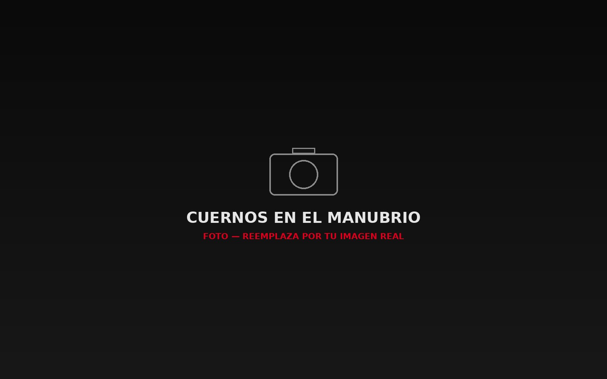
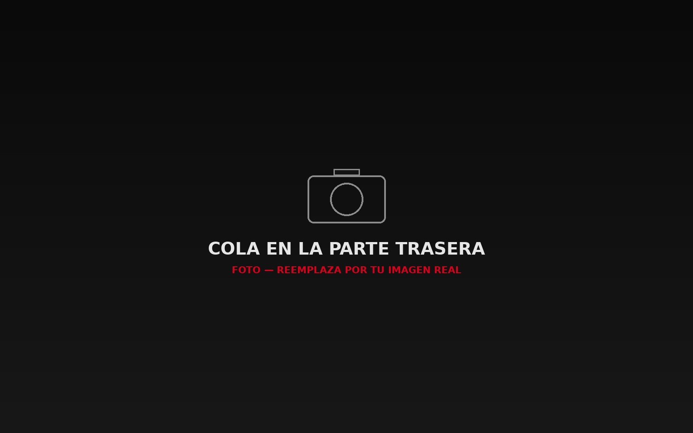
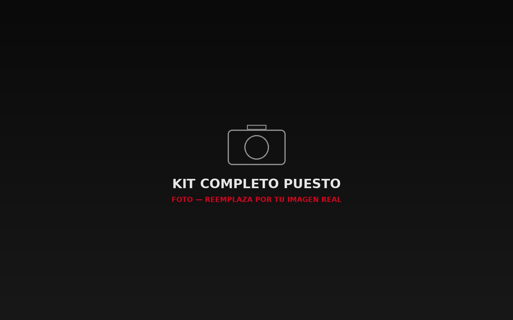
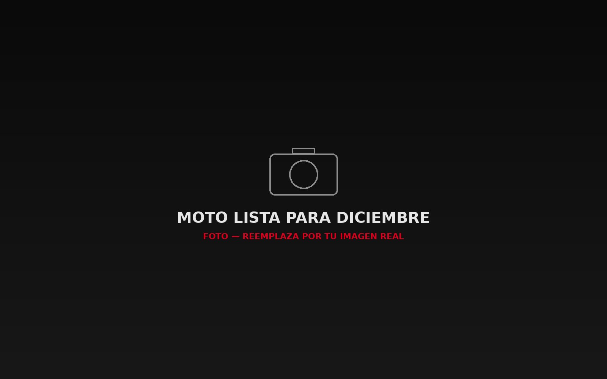

Kit completo puesto
Las tres piezas juntas, listas para rodar
Se ajustan a cada puño con velcro reforzado, sin herramientas
Broche de presión, firme a cualquier velocidad
Se sujeta al guardabarros o portaequipaje
Las tres piezas juntas, listas para rodar
La más comentada del parqueadero esta Navidad
Confeccionado a mano por dos jóvenes emprendedores Bogotanos que, durante meses, planificaron, diseñaron y crearon cada pieza con precisión y dedicación, cuidando cada detalle para ofrecerte un producto de calidad.
Diseñamos el Cuerno Navideño Para Moto Kit pensando en quienes quieren destacar en diciembre sin modificar su moto ni gastar de más.
Cada kit se revisa antes de enviarse y respondemos directamente por WhatsApp, sin intermediarios ni bots — hablas con nosotros.
¿Qué son los cuernos decorativos? Es un kit de accesorios navideños para moto: un par de cuernos dorados, una nariz roja y una cola esponjosa, inspirados en un reno. Se colocan y se quitan en minutos, y no dejan marca ni residuo en la moto.
Pago por transferencia bancaria. Al escribirnos te confirmamos disponibilidad y te enviamos los datos de la cuenta.
¡Dale a tu moto el mejor espíritu navideño! Sigue estos sencillos pasos para instalar los cuernos, la nariz y la cola de forma rápida y segura.




Despachamos desde Bogotá D.C. hacia todo Colombia por transportadora, y hacemos entregas locales por contraentrega según la zona.
Llena tus datos de envío y el peso/medidas del paquete — te llegan listos por WhatsApp para que cotices directo con la transportadora.
No. Los cuernos se sujetan con velcro reforzado y la nariz con un broche de presión — ninguna pieza usa pegante permanente ni tornillos.
Se ajusta a manubrios y caretas estándar. Si tu moto tiene un diseño muy particular, escríbenos una foto por WhatsApp y te confirmamos.
Menos de 5 minutos, sin herramientas. Se retira igual de rápido al terminar la temporada.
Sí, por transportadora a nivel nacional, y contraentrega en algunas zonas locales. Ver la sección "Envíos" para más detalle.
Por transferencia bancaria. Nos escribes por WhatsApp, confirmamos disponibilidad y te enviamos los datos de la cuenta.
Revisamos cada kit antes de enviarlo, pero si aun así llega incompleto, escríbenos por WhatsApp con una foto de lo que recibiste y te enviamos la pieza faltante sin costo adicional.
Para nada. El kit se instala sin herramientas y en pocos minutos. En la sección "Manual" tienes el paso a paso completo, con instrucciones sencillas para cada pieza.
Sí. Puedes escribirnos por WhatsApp en cualquier momento y te ayudamos a resolver cualquier duda sobre la instalación o el uso del kit.
Sí. La página no pide pagos ni datos de tarjeta — todo el proceso se confirma directamente contigo por WhatsApp antes de hacer cualquier transferencia.
Si el producto no cumple tus expectativas, escríbenos dentro de los primeros 8 días después de recibirlo y coordinamos el cambio o la devolución.
Si el kit llega con alguna pieza faltante, te la reponemos sin costo — escríbenos por WhatsApp con una foto del kit recibido y la enviamos de inmediato, sin necesidad de devolver el resto del producto.
🎁 te invitó a participar por un descuento en tu kit.

Participar es gratis. Al unirte aceptas nuestra política de privacidad.